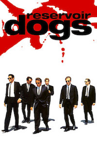

This is a description. Done by a student of LeWagon.
Here is a link!
VertigoFrom the realm of the dead is an American feature film of Alfred Hitchcock from the year 1958 with James Stewart and Kim Novak in the main roles. |
|
GoodfellasThree Decades in the Mafia is a multiple award-winning mafia drama by Martin Scorsese from 1990. |
|
|  |
Reservoir DogsWild Dogs is the first feature film by director Quentin Tarantino from 1992. As a Heist-Movie he tells the story of a failed robbery. Tarantino has a minor role in the movie as Mr. Brown. |